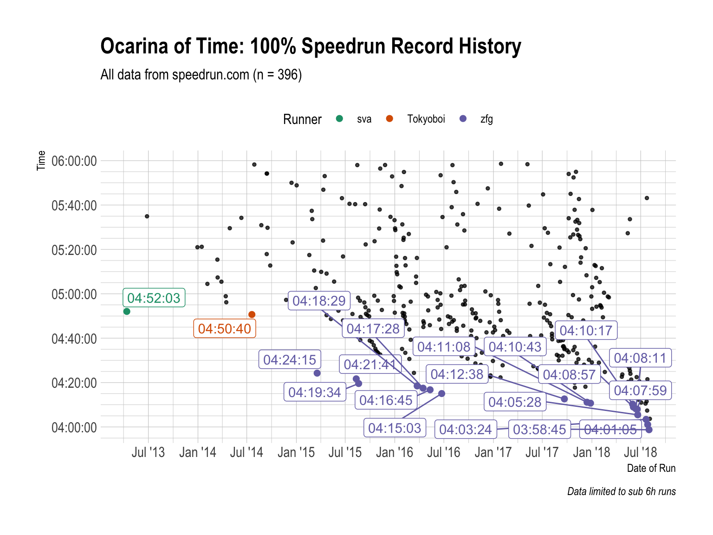
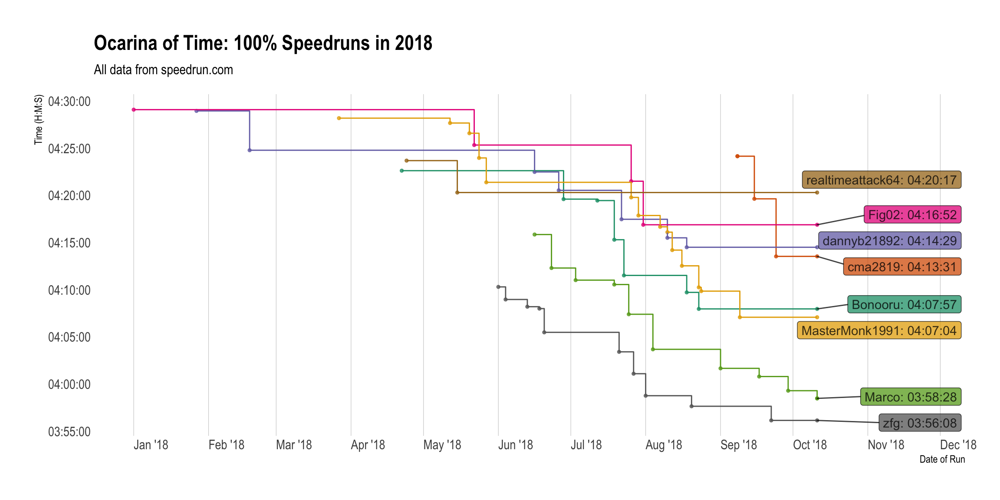

vignettes/ocarina-of-time-100-.Rmd
ocarina-of-time-100-.RmdI like Ocarina of Time 100%. So let’s take a look at that.
First up we need the game’s ID and category ID. That’s easy:
library(speedrunr)
get_games("Ocarina of Time")
#> # A tibble: 7 x 9
#> id name_internatio… name_twitch name_abbr weblink released
#> <chr> <chr> <chr> <chr> <chr> <date>
#> 1 j1l9… The Legend of Z… The Legend… oot https:… 1998-11-21
#> 2 kdkj… The Legend of Z… The Legend… ootmq https:… 2002-01-01
#> 3 268v… The Legend of Z… The Legend… oot3d https:… 2011-06-16
#> 4 nd2q… Roblox Ocarina … ROBLOX root https:… 2008-10-24
#> 5 76rk… Ocarina of Time… The Legend… ootextras https:… 1998-11-21
#> 6 m1zr… Ocarina of Time… Ocarina of… ootbq https:… 2015-11-13
#> 7 v1po… SM64: Ocarina o… SM64: Ocar… sm64oot https:… 2018-03-26
#> # ... with 3 more variables: released_year <int>, romhack <lgl>,
#> # created <dttm>get_categories("j1l9qz1g")
#> # A tibble: 12 x 6
#> id name link type miscellaneous rules
#> <chr> <chr> <chr> <chr> <lgl> <chr>
#> 1 q255j… 100% https://www.s… per-g… FALSE "**100% Rules**:\r\…
#> 2 824qn… 100% https://www.s… per-l… FALSE "General Rules:\r\n…
#> 3 zdnoz… All Du… https://www.s… per-g… FALSE "**All Dungeons Rul…
#> 4 z275w… Any% https://www.s… per-g… FALSE "**Any% Rules**:\r\…
#> 5 02qe4… Any% https://www.s… per-l… FALSE "General Rules:\r\n…
#> 6 9kvr8… Ganonl… https://www.s… per-g… TRUE "**Ganonless Rules*…
#> 7 zd35j… Glitch… https://www.s… per-g… FALSE ""
#> 8 ndxlw… Glitch… https://www.s… per-l… FALSE "General Rules:\r\n…
#> 9 jdrwr… MST https://www.s… per-g… FALSE "**Medallions/Stone…
#> 10 9d85y… No IM/… https://www.s… per-g… FALSE "**No IM/WW Rules**…
#> 11 xd1wj… No Wro… https://www.s… per-g… TRUE "**No Wrong Warp Ru…
#> 12 rklm8… Restri… https://www.s… per-l… TRUE "General Rules:\r\n…So we’re good.
game <- "j1l9qz1g"
category <- "q255jw2o"
oot100 <- get_runs(game = "j1l9qz1g", category = "q255jw2o", max = Inf)Note that I’m useing max = Inf to make sure I get all the runs.
str(oot100)
#> Classes 'tbl_df', 'tbl' and 'data.frame': 539 obs. of 22 variables:
#> $ id : chr "z11p7k9z" "yl4ej6rm" "z51vk85m" "yl4r56rm" ...
#> $ weblink : chr "https://www.speedrun.com/oot/run/z11p7k9z" "https://www.speedrun.com/oot/run/yl4ej6rm" "https://www.speedrun.com/oot/run/z51vk85m" "https://www.speedrun.com/oot/run/yl4r56rm" ...
#> $ game : chr "j1l9qz1g" "j1l9qz1g" "j1l9qz1g" "j1l9qz1g" ...
#> $ level : logi NA NA NA NA NA NA ...
#> $ category : chr "q255jw2o" "q255jw2o" "q255jw2o" "q255jw2o" ...
#> $ videos : chr "https://www.youtube.com/watch?v=HaUTONEwj8I" "https://www.youtube.com/watch?v=ad-56T4uJto" "https://www.youtube.com/watch?v=jTH_lZNUeGA" "https://www.youtube.com/watch?v=gZjxgUpNNOM" ...
#> $ status : chr "verified" "verified" "verified" "verified" ...
#> $ comment : chr "2nd try dampe" "Biggest mistake was losing 1:20 to forgetting a heart piece lol. Average RNG, 40 seconds to save at each of fis"| __truncated__ NA NA ...
#> $ player_id : chr "e8e5v680" "qjn35kwx" "v819rrxp" "v819rrxp" ...
#> $ player_url : chr "https://www.speedrun.com/user/zfg" "https://www.speedrun.com/user/dannyb21892" "https://www.speedrun.com/user/Marco" "https://www.speedrun.com/user/Marco" ...
#> $ player_name : chr "zfg" "dannyb21892" "Marco" "Marco" ...
#> $ player_role : chr "user" "user" "user" "user" ...
#> $ player_signup : POSIXct, format: "2015-02-17 03:55:57" "2015-10-28 13:39:39" ...
#> $ date : Date, format: "2018-10-30" "2018-10-13" ...
#> $ submitted : POSIXct, format: "2018-10-31 01:33:08" "2018-10-13 20:39:56" ...
#> $ time_primary : int 14092 14983 14308 14357 15211 14168 14447 20884 15577 22987 ...
#> $ time_realtime : int 14092 14983 14308 14357 15211 14168 14447 20884 15577 22987 ...
#> $ time_ingame : int 0 0 0 0 0 0 0 0 0 0 ...
#> $ time_hms : 'hms' num 03:54:52 04:09:43 03:58:28 03:59:17 ...
#> ..- attr(*, "units")= chr "secs"
#> $ system_platform: chr "nzelreqp" "nzelreqp" "nzelreqp" "nzelreqp" ...
#> $ system_emulated: logi FALSE FALSE FALSE FALSE FALSE FALSE ...
#> $ system_region : chr "o316x197" "o316x197" "o316x197" "o316x197" ...We want some additional data:
library(dplyr)
library(knitr)
oot100 <- oot100 %>%
add_platforms() %>%
add_regions() %>%
find_records()
oot100 %>%
arrange(time_hms) %>%
select(time_hms, player_name, date, system_platform, system_region) %>%
head(10) %>%
kable()| time_hms | player_name | date | system_platform | system_region |
|---|---|---|---|---|
| 03:54:52 | zfg | 2018-10-30 | Wii Virtual Console | JPN / NTSC |
| 03:56:08 | zfg | 2018-09-22 | Wii Virtual Console | JPN / NTSC |
| 03:57:38 | zfg | 2018-08-20 | Wii Virtual Console | JPN / NTSC |
| 03:58:28 | Marco | 2018-10-11 | Wii Virtual Console | JPN / NTSC |
| 03:58:45 | zfg | 2018-08-01 | Wii Virtual Console | JPN / NTSC |
| 03:59:17 | Marco | 2018-09-29 | Wii Virtual Console | JPN / NTSC |
| 04:00:47 | Marco | 2018-09-17 | Wii Virtual Console | JPN / NTSC |
| 04:01:05 | zfg | 2018-07-27 | Wii Virtual Console | JPN / NTSC |
| 04:01:39 | Marco | 2018-09-01 | Wii Virtual Console | JPN / NTSC |
| 04:03:24 | zfg | 2018-07-21 | Wii Virtual Console | JPN / NTSC |
Now we can take a look at the categories (recent) history, with highlighted records:
library(ggplot2)
library(ggrepel)
library(hrbrthemes)
library(hms)
oot100 %>%
filter(time_hms < hms::hms(hours = 6)) %>%
{
ggplot(., aes(date, time_hms)) +
geom_point(size = 1, alpha = .75) +
geom_point(size = 2, data = filter(., record), aes(color = player_name)) +
geom_label_repel(data = filter(., record),
aes(label = time_hms, color = player_name),
fill = "white", show.legend = F) +
scale_x_date(date_breaks = "6 months", date_labels = "%b '%y") +
scale_y_time(breaks = seq(2 * 60^2, 20 * 60^2, 1/3 * 60^2),
minor_breaks = seq(2 * 60^2, 20 * 60^2, 5 * 60)) +
scale_color_brewer(palette = "Dark2") +
labs(title = "Ocarina of Time: 100% Speedrun Record History",
subtitle = paste0("All data from speedrun.com (n = ", nrow(.), ")"),
x = "Date of Run", y = "Time",
color = "Runner", caption = "Data limited to sub 6h runs") +
theme_ipsum() +
theme(legend.position = "top")
}
Please note that the data on speedrun.com does not cover the whole history. There are lots of older runs missing here, and unless the mods come together und do some historic backlogging, that’s as good as it gets for now.
We can also take a look at the recent developments:
library(lubridate)
tmp <- oot100 %>%
filter(time_hms < hms::hms(hours = 4, minutes = 30),
date >= ymd("2018-01-01")) %>%
select(player_name, time_hms, date)
bind_rows(
tmp,
tmp %>%
group_by(player_name) %>%
summarize(time_hms = min(time_hms), date = today()) %>%
ungroup
) %>%
{
ggplot(., aes(date, time_hms, color = player_name, fill = player_name)) +
geom_point(size = 1, alpha = .75) +
geom_step() +
geom_label_repel(data = .
%>% group_by(player_name) %>%
summarize(y = min(time_hms), x = max(date)),
aes(label = paste0(player_name, ": ", y), x = x, y = y),
color = "black", alpha = .75, show.legend = F,
hjust = 1, direction = "y", nudge_x = 60^2) +
scale_x_date(date_breaks = "1 month", date_labels = "%b '%y",
limits = c(as.Date(NA), today() + days(45))) +
scale_y_time(breaks = seq(0, 20 * 60^2, 1/12 * 60^2),
minor_breaks = seq(0, 20 * 60^2, 1/24 * 60)) +
scale_color_brewer(palette = "Dark2", guide = F) +
scale_fill_brewer(palette = "Dark2", guide = F) +
labs(title = "Ocarina of Time: 100% Speedruns in 2018",
subtitle = "All data from speedrun.com",
x = "Date of Run", y = "Time (H:M:S)") +
theme_ipsum(grid = "X") + theme(axis.text.x = element_text(hjust = 0))
}